Algorithmes et C appliqués aux Systèmes Numériques
Les pointeurs, les structures et les fonctions
John Samuel
CPE LyonAnnée : 2019-2020Courriel : john(dot)samuel(at)cpe(dot)fr
Objectifs
Les pointeurs
Les structures
Les unions
Introduction aux fonctions
Architecture
16 bits: E.g., Intel C8086
32 bits: E.g., Intel 80386,Intel Pentium II/III, AMD Athlon
64 bits: E.g., AMD Athlon 64, Intel Core 2
Une architecture n-bit peut adresser une mémoire de taille 2n .
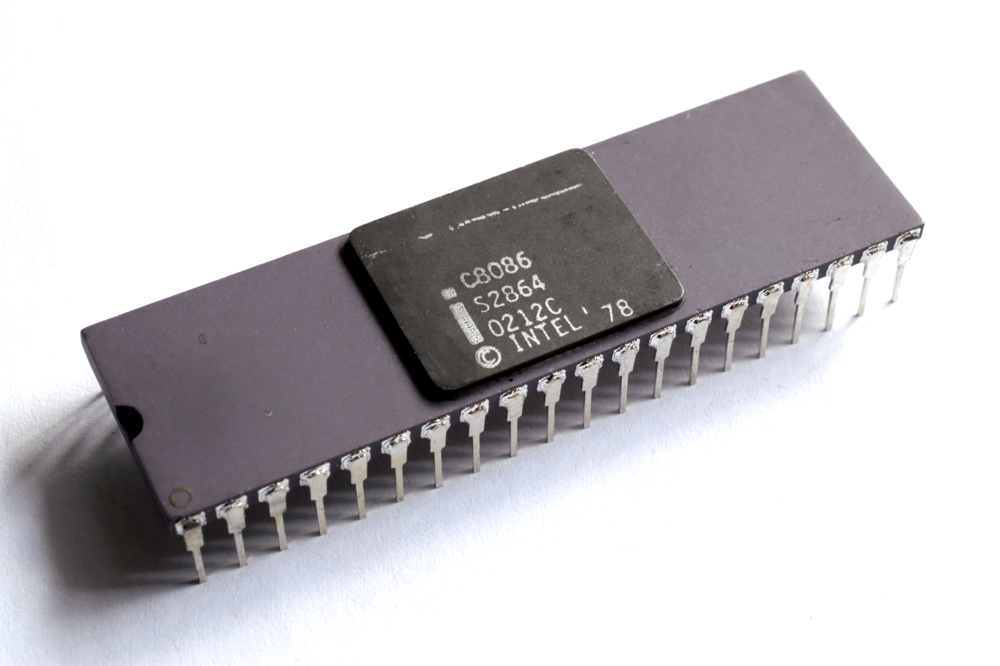
Architecture
16 bits: 65,536 adresses (octets)
32 bits: 4 Gio (232 :4,294,967,295)adresses (octets)
64 bits: 16 Eio (264 ) adresses (octets)
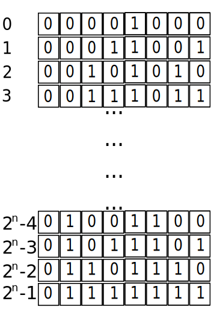
La capacité de la mémoire vive d'un ordinateur est de 4GO, 8GO, 16GO etc.
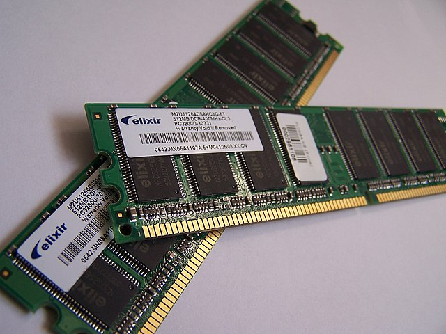
Mémoire virtuelle
Mémoire virtuelle permet l'utilisation de la mémoire de masse comme extension de la mémoire vive.Adresses : Les adresses virtuelles et les adresses physiques
Les adresses virtuelles sont utilisées par un programme
Les adresses physiques sont utilisées par une puce mémoire
L'unité de gestion mémoire traduit des adresses virtuelles en adresses physiques.
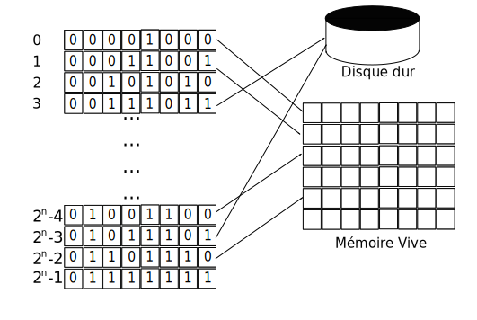
La conversion des adresses virtuelles en adresses physiques
Dans une représentation binaire donnée,
Le bit de poids fort (MSB) : le bit qui représente la plus grande puissance de 2
Le bit de poids faible (LSB) : le bit qui représente la plus petite puissance de 2
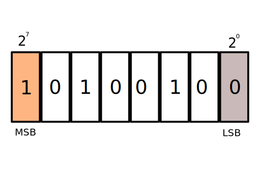
MSB et LSB (8 bit)
Dans une représentation binaire donnée (16 bit),
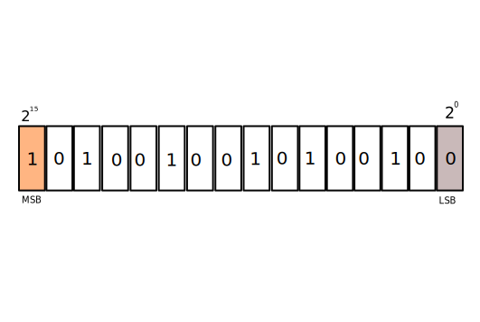
MSB et LSB (16 bit)
Endianness (Boutisme)
est l'ordre dans lequel les octets sont organisés en mémoire.
Big-endian (grand-boutiste)
Little-endian (petit-boutiste)
Remarque: On va utiliser petit-boutiste dans notre cours
Boutisme: grand-boutiste et petit-boutiste
char c = 'a' ;
char *my_char_addr = &c;
Remarque: my_char_addr = 0xab71
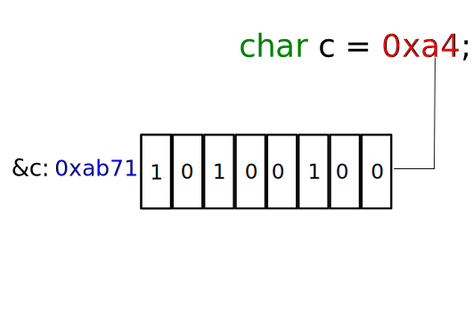
une variable char
short s = 0xa478 ;
short *my_short_addr = &s;
Remarque: my_short_addr = 0xab71
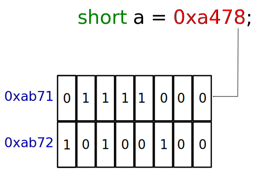
une variable short
int i = 0xa47865ff ;
int *my_int_addr = &i;
Remarque: my_int_addr = 0xab71
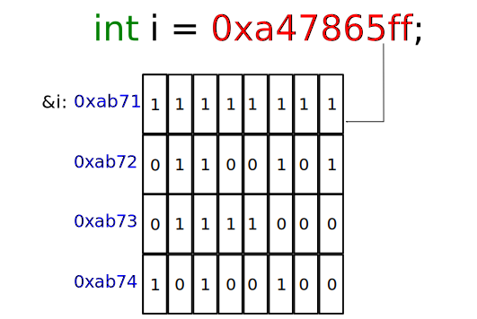
une variable int
long int li = 0xa47865ff ;
long int *my_long_int_addr = &li;
Remarque: my_long_int_addr = 0xab71
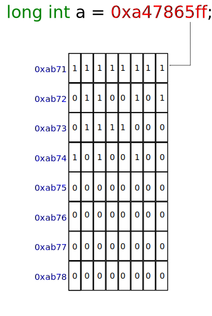
une variable long int
float (32-bit)
signe: bit 31
exposant: bits 23-30
mantisse: bits 0-22
Remarque: IEEE 754
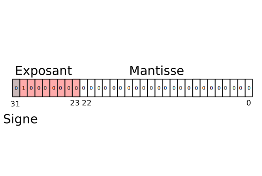
une variable float
double (64-bit)
signe: bit 63
exposant: bits 52-62
mantisse: bits 0-51
Remarque: IEEE 754
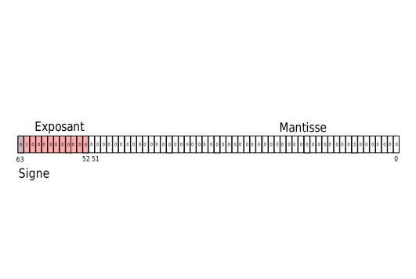
une variable double
float f = 2 ;
float *my_float_addr = &f;
Remarque: my_float_addr = 0xab71
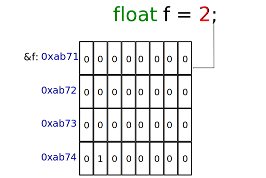
une variable float
float f = 1 ;
float *my_float_addr = &f;
Remarque: my_float_addr = 0xab71
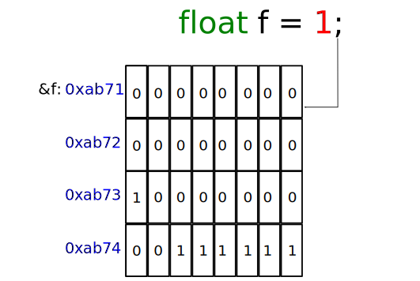
une variable float
double d = 2 ;
double *my_double_addr = &d;
Remarque: my_double_addr = 0xab71
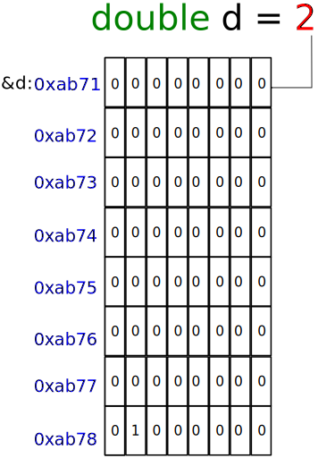
une variable double
double d = 2 ;
double *my_double_addr = &d;
Remarque: my_double_addr = 0xab71
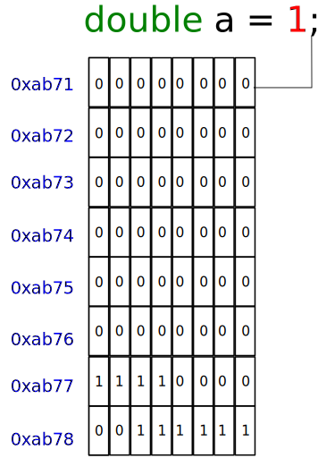
une variable double
Type
Code de conversion
pointeur
%p
printf ("char : %p\n" , my_char_addr );
printf ("short : %p\n" , my_short_addr );
printf ("int : %p\n" , my_int_addr );
printf ("long int : %p\n" , my_long_int_addr );
printf ("float : %p\n" , my_float_addr );
printf ("double : %p\n" , my_double_addr );
L'opérateur de déréférenciation *
désigne l'objet pointé par un pointeur
char
c
= 'a' ;
char
*my_char_addr
= &c;
printf
("%c" ,
*my_char_addr );
L'opérateur * est utilisé pour manipuler un objet pointé
Exemple
char
c
= 'a' ;
char
*my_char_addr
= &c;
c
= 'b' ;
*my_char_addr
= 'c' ;
printf
("%c" ,
c );
Résultat
c
//le caractère
pointé par my_char_addr prend la valeur 'c'
L'opérateur * est utilisé pour manipuler un objet pointé
Exemple
int
i
= 0x20 ;
int
*my_int_addr
= &i;
*my_int_addr
= 1 ;
*my_int_addr
= *my_int_addr
+ 1 ;
//i = 0x2
i
= i
+ 3 ;
//i = 0x5
printf
("%x" ,
*my_int_addr );
Résultat
5
Un tableau est un ensemble d'éléments homogènes.
char
a[8]
= {0xff,0x65,0x78,
0xa4,0x0,0x0,0x0,0x0} ;
char
*ptr
= &a[0];
un tableau de caractères
char
a[8]
= {0xff,0x65,0x78,
0xa4,0x0,0x0,0x0,0x0} ;
char
*ptr
= &a[0];
ptr
= ptr + 1;
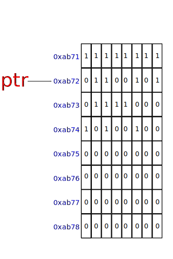
un tableau de caractères
short
s[4]
= {0x65ff,0xa478}
short
*sptr
= &s[0];
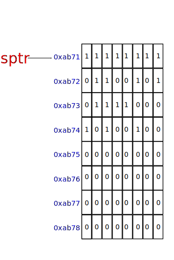
un tableau d'entier
short
s[4]
= {0x65ff,0xa478}
short
*sptr
= &s[0];
sptr
= sptr + 1;
Remarque: Notez-bien la position de sptr .
un tableau d'entier
Imaginez les trois variables suivantes:
int
*iptr ,
float
*fptr ,
double
*dptr
. Elles ont toutes la même valeur (0x4).
iptr =
iptr + 2;
fptr =
fptr + 2;
dptr =
dptr + 2;
Donnez les valeurs de iptr , fptr , dptr .
short
s[4]
= {0x65ff,0xa478}
short
*sptr
= &s[0];
ou
short
*sptr
= s;
short
s[4]
= {0x65ff,0xa478}
short
*sptr
= s;
printf (
"%hd" ,
*(sptr+3) )
ou
printf (
"%hd" ,
*(s+3) )
ou
printf (
"%hd" ,
s[3] )
ou
printf (
"%hd" ,
sptr[3] )
short
s[2]
= {0x65ff,0xa478}
Les notations équivalents
Notation indicielle
Notation pointeur
&s[0]
s
&s[i]
s+i
s[0]
*s
s[i]
*(s+i)
short
*sptr1 ,
*sptr2 ;
Opérateur
Exemple
pointeur + entier
sptr1 + 2
pointeur - entier
sptr1 - 2
pointeur1 - pointeur2
sptr1 - sptr2
void *
char
a
= 'a' ;
char
*cptr
= &a;
int
i
= 1;
cptr
= &i;
$ gcc ...
void *
char
a
= 'a' ;
char
*cptr
= &a;
void
*vptr
= &a;
int
i
= 1;
vptr
= &i;
float
f
= 1;
vptr
= &f;
Sans perte d'information
char ->
short short ->
int int ->
long int int ->
float
Exemple
short
s
= 0xffff ;
int
i
= s
Remarque: N'oubliez pas d'utiliser sizeof .
Les conversions explicites
short
s
= 0xffff ;
float
f
= 30.999 ;
int
i
= (int ) s;
int
j
= (int ) f;
Remarque: Une conversion explicite (typecasting): (type )
void *
char
a
= 'a' ;
char
b
= 'b' ;
char
*cptr
= &a;
void
*vptr
= &b;
cptr
= (char * )vptr;
Écrivez un programme en utilisant char * et les opérateurs de pointeurs pour voir les octets d'une variable long int.
Tableau
est un ensemble d'éléments homogènes
Mais comment travailler avec un ensemble d'éléments hétérogènes?
Base de données de gestion des étudiants
char prenom[135][30];
char nom[135][30];
char rue[135][30];
char ville[135][30];
short notes[135];
Question: Quelles sont les problèmes?
Une structure
est un ensemble d'éléments hétérogènes.
struct etudiant{
char prenom[30];
char nom[30];
char rue[30];
char ville[30];
short notes;
};
La déclaration et l'utilisation d'une structure
struct etudiant dupont;
strcpy (dupont.prenom, "Dupont" );
strcpy (dupont.nom, "Pierre" );
strcpy (dupont.rue, "Boulevard du 11 novembre 1918" );
strcpy (dupont.ville, "Villeurbanne" );
dupont.notes = 19;
Tableaux de structures
struct etudiant etudiant_cpe[135];
strcpy (etudiant_cpe[0].prenom, "Dupont" );
strcpy (etudiant_cpe[0].nom, "Pierre" );
strcpy (etudiant_cpe[0].rue, "Boulevard du 11 novembre 1918" );
strcpy (etudiant_cpe[0].ville, "Villeurbanne" );
etudiant_cpe[0].notes = 19;
Une structure dans une structure
struct adresse{
char rue[30];
char ville[30];
};
struct etudiant{
char prenom[30];
char nom[30];
struct adresse adresse;
short notes;
};
Une structure dans une structure
struct etudiant{
char prenom[30];
char nom[30];
struct adresse{
char rue[30];
char ville[30];
} adresse;
short notes;
};
Une structure dans une structure
struct etudiant etudiant_cpe[135];
strcpy (etudiant_cpe[0].prenom, "Dupont" );
strcpy (etudiant_cpe[0].nom, "Pierre" );
strcpy (etudiant_cpe[0].adresse.rue, "Boulevard du 11 novembre 1918" );
strcpy (etudiant_cpe[0].adresse.ville, "Villeurbanne" );
etudiant_cpe[0].notes = 19;
Créer (et Renommer) un type
typedef struct etudiant{
char prenom[30];
char nom[30];
struct adresse{
char rue[30];
char ville[30];
} adresse;
short notes;
} etudiant;
La déclaration
etudiant dupont;
Renommer un type
typedef int integer;
integer i = 10;
/* Fichier: bonjour2.c #include <stdio.h> // en-têtes(headers) int main ()
{ int year = 2017 ;
//déclaration d'un variable printf ("Bonjour le Monde!!! C'est l'annee %d" , year );return 0;
Prototype
int
add(
int ,
int );
L'implémentation
int
add(
int
a ,
int
b
) {
return
a
+ b ;
}
Prototype (operators.h)
int
add(
int ,
int );
L'implémentation (operators.c)
int
add(
int
a ,
int
b
) {
return
a
+ b ;
}
Prototype
type
fonction(
[type ,]*);
L'implémentation
type
fonction(
[type
variable ,]*)
{
[return
valeur ];
}
Remarque: type : void, les types de base, les types composés
L'utilisation
#include
"operators.h" // en-têtes(headers) int
num1
= 20,
num2
= 60;
int
sum
=
add (
num1 ,
num2 );
Remarque: Regardez l'utilisation de
" " dans en-têtes
Prototype (nom.h)
void
print(
char * ,
int );
L'implémentation (nom.c)
#include <stdio.h> // en-têtes(headers) void
print(
char *
nom ,
int
size
) {
int
i ;
for (
i = 0;
i <
size ;
i ++) {
printf (
"%c" ,
nom [i ]);
}
}
Remarque: Il n'y a pas de
return
/* Fichier: bonjour3.c #include
"nom.h" // en-têtes(headers) int main ()
{
print (
"Bonjour le Monde!!!" );
char
message [] =
"Pierre" ;
print ("Je suis " );
print (message ); return 0;
La compilation
$ gcc -o bonjour bonjour3.c nom.c
L'exécution
$./bonjour
Remarque: un seul fichier C peut avoir une fonction nommée 'main'.
Les outils Linux
$ ls -l
$ cd dossier
$ cat fichier
..
/* Fichier: bonjour4.c #include
"nom.h" // en-têtes(headers) int main (int argc , char ** argv)
{
print ("Bonjour le Monde. Je suis " );
print (argv[1] );
print (argv[2] );
print (argv[3] );
print (argv[4] );
return 0;
La compilation
$ gcc -o bonjour bonjour4.c nom.c
L'exécution
$./bonjour Pierre Dupont Lyon 69001
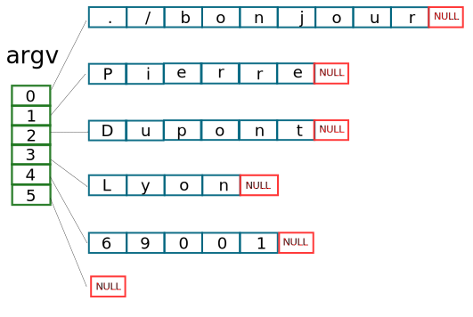
/* Fichier: bonjour4.c #include
"nom.h" // en-têtes(headers) int main (int argc , char ** argv)
{
print ("Bonjour le Monde. Je suis " );
if ( argc == 2 ) {
print (argv[1] ); } return 0;
Remarque:
argv[0] est toujours le nom de la fichier exécutable (e.g., bonjour)
/* Fichier: addition.c #include
<stdio.h> // en-têtes(headers) int main (int argc , char ** argv)
{
int num1 , num2 ;
printf ("Tapez numéro 1" );
scanf ("%d" , &num1 );
printf ("Tapez numéro 2" );
scanf ("%d" , &num2 );
printf ("La somme: %d\n" , num1 + num2 );
return 0;
Remarque: Regardez l'opérateur & .
/* Fichier: addition.c #include
<stdio.h> // en-têtes(headers) int main (int argc , char ** argv)
{
int num1 , num2 ;
printf ("Tapez deux numéros: " );
scanf ("%d %d" , &num1, &num2 );
printf ("La somme: %d\n" , num1 + num2 );
return 0;
Remarque: Regardez l'opérateur & .
/* Fichier: bonjour5.c #include
<stdio.h> // en-têtes(headers) int main (int argc , char ** argv)
{
char nom [50];
printf ("Bonjour. Votre nom? " );
scanf ("%s" , nom );
printf ("Bonjour %s!" , nom);
return 0;
Remarque: Regardez s sans l'opérateur & .
Mots clés
Code de conversion
char
c
unsigned char
hhu
short
hd
unsigned short
hu
int
d, i
unsigned int
u
long int
ld
unsigned long int
lu
Mots clés
Code de conversion
long long int
lld
unsigned long long int
llu
float
f, F
double
g, G
long double
Lg
string of characters
s
/* Fichier: fgets-message.c #include
<stdio.h> // en-têtes(headers) int main (int argc , char ** argv)
{
char message [50];
printf ("Tapez votre message: " );
fgets (message , sizeof(message ), stdin );
printf ("Votre message: %s\n" , message );
return 0;
Remarque: Regardez le paramètre stdin .
$ man ls
$ man 3 scanf
$ man 3 printf
$ man 2 open
$ man fopen
..
NAME
scanf
...
SYNOPSIS
...
DESCRIPTION
...
RETURN VALUE
...
..
/* Fichier: string.c #include
<stdio.h> // en-têtes(headers) #include
<string.h> int main (int argc , char ** argv)
{
char nom [10];
printf ("Bonjour. Votre nom? " );
scanf ("%s" , nom );
printf ("La taille: %lu\n" , strlen (nom ));
return 0;
Remarque: strlen calcule la taille d'une chaine de caractères.
La compilation
$ gcc -o strlen string.c
1ere Exécution
$./strlen
Bonjour. Votre nom? John
La taille: 4
2eme Exécution
$./strlen
Bonjour. Votre nom? : ABCDEFGHIJKLMNOPQRSTUVWXYZ
*** stack smashing detected ***: ./strlen terminated
/* Fichier: string.c #include
<stdio.h> // en-têtes(headers) #include
<string.h> int main (int argc , char ** argv)
{
char nom [10];
printf ("Bonjour. Votre nom? " );
scanf ("%9s" , nom );
printf ("La taille: %lu\n" , strnlen (nom , 10));
return 0;
Remarque: strnlen calcule la taille d'une chaine de caractères (taille maximum).
/* Fichier: string.c #include
<stdio.h> // en-têtes(headers) #include
<string.h> int main (int argc , char ** argv)
{
char nom [10];
printf ("Bonjour. Votre nom? " );
scanf ("%9s" , nom );
printf ("La taille: %lu\n" , strnlen (nom , 10));
return 0;
Remarque: strnlen calcule la taille d'une chaine de caractères (taille maximum).
/* Fichier: string.c #include
<stdio.h> // en-têtes(headers) #include
<string.h> int main (int argc , char ** argv)
{
char nom [10];
printf ("Bonjour. Votre nom? " );
scanf ("%9s" , nom );
printf ("La taille: %lu\n" , strnlen (nom , 10));
return 0;
Remarque: strnlen calcule la taille d'une chaine de caractères (taille maximum).
/* Fichier: string.c #include
<stdio.h> // en-têtes(headers) #include
<string.h> int main (int argc , char ** argv)
{
char numstr [10] = "1024" ;
int num = atoi (numstr);
printf ("Numéro: %d" , num);
return 0;
/* Fichier: string.c #include
<stdio.h> // en-têtes(headers) #include
<string.h> int main (int argc , char ** argv)
{
int inum1, inum2 ;
float fnum3 = 20;
char numstr [10] = "10 20 30.33" ;
sscanf (numstr , "%d %d %f" , &inum1, &inum2, &fnum3 );
printf ("Numéros: %d %d %f\n" , inum1 , inum2 , fnum3 );
return 0;
/* Fichier: string.c #include
<stdio.h> // en-têtes(headers) #include
<string.h> int main (int argc , char ** argv)
{
int inum1, inum2 ;
float fnum3 = 20;
char numstr [10] = "10;20;30.33" ;
sscanf (numstr , "%d;%d;%f" , &inum1, &inum2, &fnum3 );
printf ("Numéros: %d %d %f\n" , inum1 , inum2 , fnum3 );
return 0;
La compilation
$ gcc -o strnlen string2.c
1ere Exécution
$./strnlen
Bonjour. Votre nom? John
La taille: 4
strcat strncat strcpy strncpy strcmp strncmp
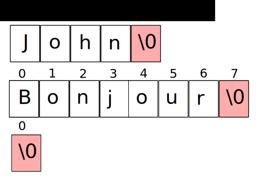
/* Fichier: string3.c #include
<stdio.h> // en-têtes(headers) #include
<string.h> int main (int argc , char ** argv)
{
char message []= {"Bonjour" }, nom []= {"John" }, string [20] = "" ;
strncat (string , message , 19);
strcat (string , " " );
strncat (string , nom , 19);
printf ("%s" , message ));
return 0;
/* Fichier: string4.c #include
<stdio.h> // en-têtes(headers) #include
<string.h> int main (int argc , char ** argv)
{
char message []= {"Bonjour" }, nom []= {"John" }, string [20] = "" ;
strncpy (string , message , 19);
strcpy (string , " " );
strncpy (string , nom , 19);
printf ("%s" , message ));
return 0;
La compilation
$ gcc -o strncat string3.c
$ gcc -o strncpy string4.c
1ere Exécution
$./strncat
Bonjour John
2eme Exécution
$./strncpy
John
/* Fichier: file.c #include
<stdio.h> // en-têtes(headers) #include
<sys/types.h> #include
<sys/stat.h> #include
<fcntl.h> #include
<unistd.h> int main (int argc , char ** argv)
{
char content [1000];
int fd , count , size ;
fd = open ("./file.c" , O_RDONLY);
size = read(fd , content , 1000);
for (count = 0; count < size ; count ++) {
printf ("%c" , content [count ]);
}
close (fd );
return 0;
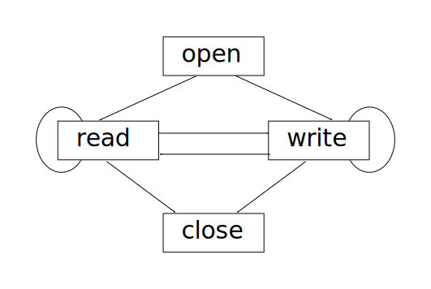
/* Fichier: file.c #include
<stdio.h> // en-têtes(headers) #include
<sys/types.h> #include
<sys/stat.h> #include
<fcntl.h> #include
<unistd.h> int main (int argc , char ** argv)
{
char content ;
int fd , count , size ;
fd = open ("./file.c" , O_RDONLY);
while (1) {
size = read(fd , &content , 1);
if (size < 1) {
break ;
}
printf ("%c" , content );
}
close (fd );
return 0;
/* Fichier: file.c #include
<stdio.h> // en-têtes(headers) #include
<sys/types.h> #include
<sys/stat.h> #include
<fcntl.h> #include
<unistd.h> int main (int argc , char ** argv)
{
char content[] = "Bonjour" ;
int fd , count , size ;
fd = open ("./message.txt" , O_CREAT|O_WRONLY, S_IRUSR|S_IWUSR);
size = write(fd , content , sizeof(content ));
close (fd );
return 0;
/* Fichier: file.c #include
<stdio.h> // en-têtes(headers) #include
<sys/types.h> #include
<sys/stat.h> #include
<fcntl.h> #include
<unistd.h> int main (int argc , char ** argv)
{
char content[] = "Bonjour" ;
int fd , count , size ;
fd = open ("./message.txt" , O_CREAT|O_WRONLY|O_APPEND, S_IRUSR|S_IWUSR);
size = write(fd , content , sizeof(content ));
close (fd );
return 0;
#include
<stdlib.h> void *
malloc (
size_t size);
void *
calloc (
size_t nmemb,
size_t size);
void
free (
void * ptr); // désallocation ou libération de mémoire
/* Fichier: memory.c #include
<stdio.h> // en-têtes(headers) #include
<stdlib.h> int main (int argc , char ** argv)
{
char *content = malloc (10 * sizeof (char )); "Bonjour" , 10);
free (content ); //libération de mémoire
return 0;
/* Fichier: memory.c #include
<stdio.h> // en-têtes(headers) #include
<stdlib.h> int main (int argc , char ** argv)
{
char *content = calloc (10, sizeof (char )); "Bonjour" , 10);
free (content ); // libération de mémoire
return 0;
Écrivez un programme qui réserve et libère un espace mémoire pour un tableau d'entiers (int, long int, short ou long long int) et un tableau de nombres en flottant (float, double ou long double) en utilisant malloc, calloc et free.
Une union
est declarée comme une structure.
union etudiant{
char prenom[30];
char nom[30];
char rue[30];
char ville[30];
};
Remarque: La taille d'une union est égale la taille du élément plus grand.
La déclaration et l'utilisation d'une union
union etudiant dupont;
strcpy (dupont.nom, "Dupont" );
printf ("%s" , dupont.prenom );
printf ("%s" , dupont.rue );
printf ("%s" , dupont.ville );
L'affichage
Dupont
Dupont
Dupont
Remarque: Tous les élements partagent la même espace de mémoire.
struct content{
char type[30];
union {
char * ccontent;
int * icontent;
float * fcontent;
};
};
/* Fichier: memory3.c #include
<stdio.h> // en-têtes(headers) #include
<stdlib.h> int main (int argc , char ** argv)
{
struct content c;
strcpy (c.type, "char" , 10);
if (strcmp (c.type, "char" ) == 0) {
c.ccontent = calloc (10, sizeof (char )); else if (strcmp (c.type, "int" ) == 0) {
c.icontent = calloc (10, sizeof (int )); return 0;
union point3d{
int value[3];
struct {
int x;
int y;
int Z;
};
};
/* Fichier: union.c #include
<stdio.h> // en-têtes(headers) int main (int argc , char ** argv)
{
union point3d p;
p.value [0] = 0x10;
p.value [1] = 0x45;
p.value [2] = 0x78;
printf ("%x %x %x\n" , p.x , p.y , p.z );
return 0;
Écrivez une structure pour la répresentation d'une couleur RGB (rouge, vert, bleu: chaque couleur prend un octet) en utilisant union et struct.
Références
Crédits d'images